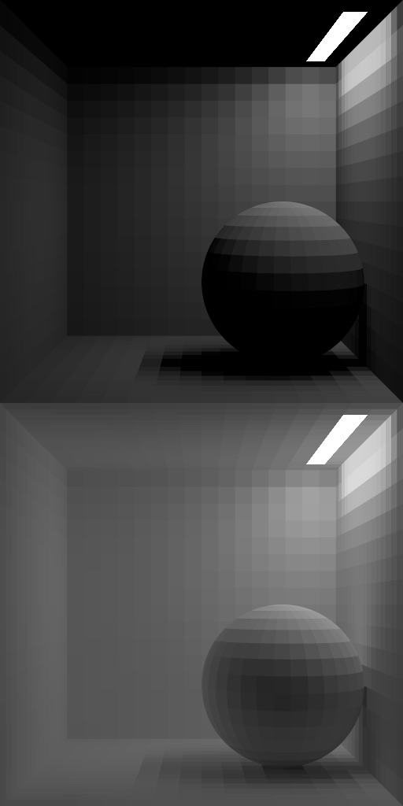
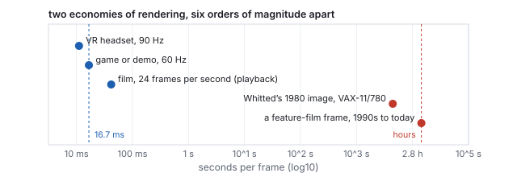
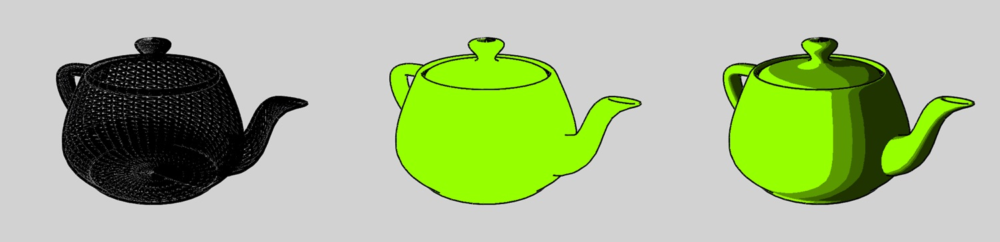
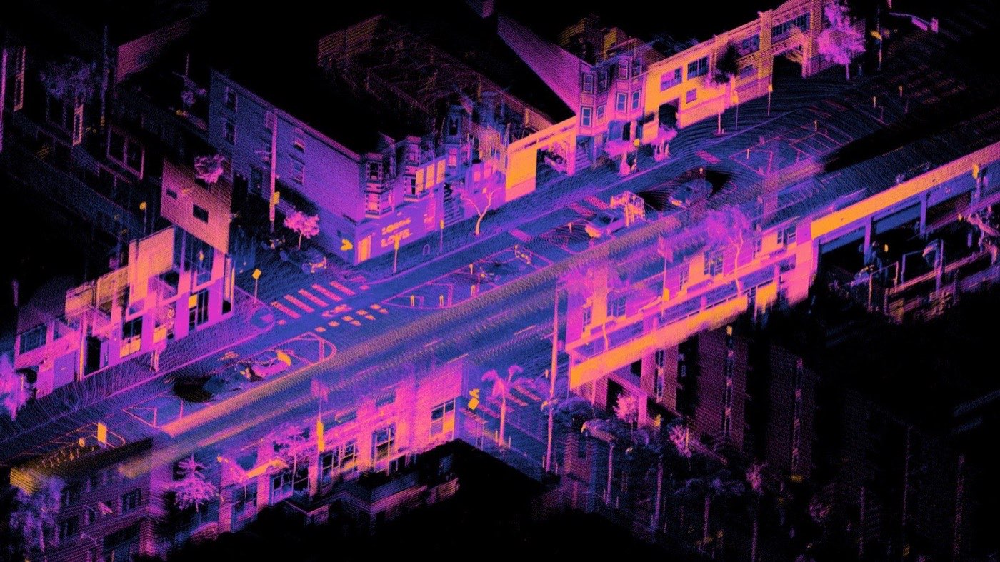
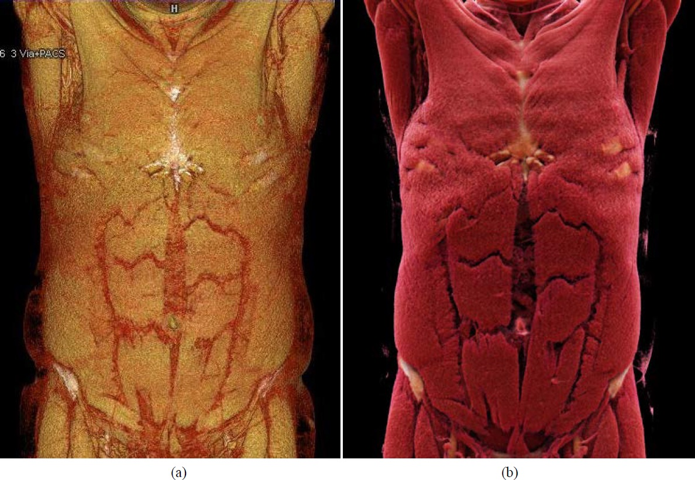
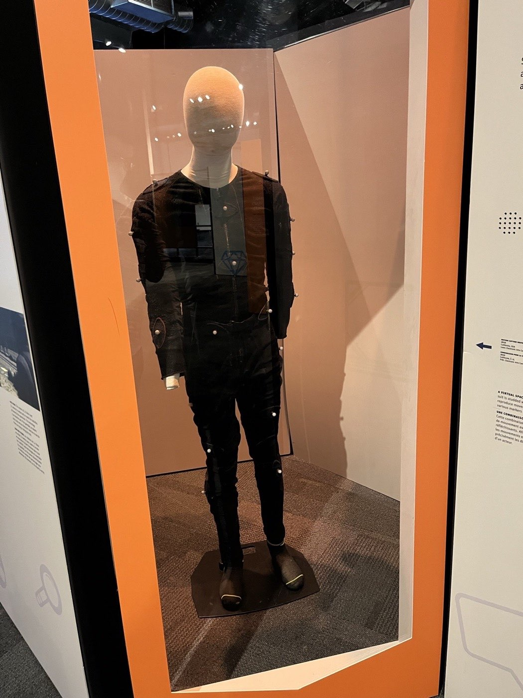
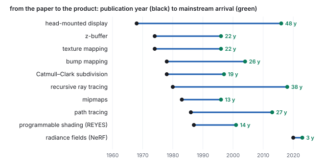
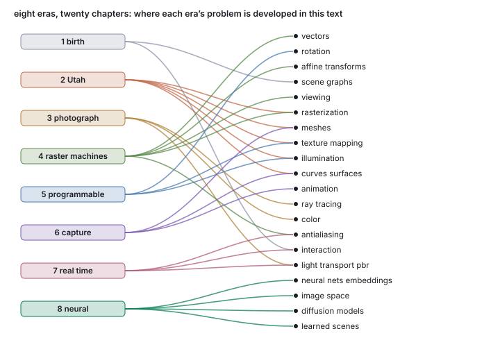

This chapter links to the course’s interactive demos and to original papers on the open web. Read it through the course website (or download the file and open it in a browser); a Canvas inline preview will not reach the demos. All chapters.
A History of Computer Graphics
This chapter tells the story of computer graphics as a map rather than as trivia. Every topic this course teaches was once somebody’s unsolved problem: how to shade a curved surface, how to decide which object is in front, how to make brick look like brick without modeling a single brick. Each was solved by particular people, in particular places, under the hardware constraints of a particular decade, and the field you are entering is the accumulation of those solutions. Knowing the story gives every technique an address: when a later chapter derives Phong illumination or unwraps a texture, you will already know where the idea came from, what problem forced it into existence, and why it stuck. Each era below ends with a pointer to the chapters that develop its ideas, so that this chapter also serves as a reading map of the whole text. Read it the way you would read the founding history of any discipline you intend to practice: these are your professional ancestors, and their papers are linked in the original.

- Interactive pictures are born (1950–1968)
- The Utah school (1968–1980)
- Chasing the photograph (1975–1990)
- The raster machines (1980–2000)
- The programmable era (2000–2015)
- Capturing and simulating reality (1990–2010)
- Real time catches film (2010–2018)
- The neural era (2020–)
- Two patterns in the story
- The map of the field today
- Exercises
1 · Interactive pictures are born 1950–1968
Computer graphics is older than you might guess: older than time-sharing, older than the mouse, nearly as old as stored-program computing itself. MIT’s Whirlwind, operational in 1951, was the first computer fast enough to compute in real time, and it talked to its operators through a cathode-ray tube: a vector display, meaning the electron beam was steered directly from point to point to draw glowing line segments, like a very fast plotter made of light. There were no pixels; there was no framebuffer; there was only the beam, redrawing every line thirty-odd times a second before the phosphor faded. Whirlwind grew into SAGE, the continent-spanning 1950s air-defense system, whose operators watched radar tracks drawn as vectors on round consoles and pointed at aircraft with a light-sensing gun, arguably the first humans to interact with a computer through a picture.
The founding document of the field, though, is a PhD thesis. In 1963 Ivan Sutherland, a graduate student at MIT working on the TX-2 computer at Lincoln Laboratory, demonstrated Sketchpad, a program that let a person draw directly on the display with a light pen, and then talk back: grab a line and stretch it, zoom into a drawing far larger than the screen, declare that two lines must stay parallel or two segments equal in length and watch the system enforce the constraints automatically. Sketchpad also let a drawing contain instances of a master drawing (change the master rivet and every rivet in the bridge changes), an idea you will meet again in this course as the scene graph, and which computer scientists recognize as an ancestor of object-oriented programming. Nearly every interactive system since, from CAD packages to the graphical user interface itself, descends recognizably from this one program. The thesis is a genuinely readable classic, and a free facsimile edition is online: Sutherland, Sketchpad: A Man-Machine Graphical Communication System (1963).

The same years produced the first commercial computer-aided design system, General Motors and IBM’s DAC-1 (1964), and the algorithm that every raster line still descends from: Jack Bresenham’s 1965 method for choosing, with integer arithmetic only, which grid points a line should light (Bresenham, “Algorithm for Computer Control of a Digital Plotter,” 1965). It was written for a pen plotter, since there were no raster screens to draw on, and it is the ancestor of the edge-function rasterizer of the rasterization chapter: the same question, which grid cells does a geometric shape cover, answered with additions.
Two years after Sketchpad, Sutherland wrote the field’s manifesto. In a short 1965 essay, “The Ultimate Display”, he imagined the display not as a window onto data but as “a looking glass into a mathematical wonderland,” a room in which the computer controls the existence of matter itself. It reads today as a product roadmap the industry has been executing for sixty years: virtual reality, physical simulation, direct manipulation. Sutherland then went and built the first piece of it himself: in 1968 he and his students demonstrated the first head-mounted display, a contraption so heavy it hung from the ceiling and was nicknamed the Sword of Damocles. It drew wireframe rooms that stayed put as you turned your head. Keep that date in mind when you reach Section 7: consumer virtual reality is this 1968 experiment, shipped 48 years later.
What held the era back was hardware arithmetic. A vector display could draw a few thousand line segments before flicker set in, and filled, shaded surfaces were out of reach entirely, because there was nowhere to put the picture. Solving that required a place with money, patience, and an unreasonable concentration of talent.
In this text: Sketchpad’s loop, constraints and light pen are the subject of the interactive-systems chapter; its instances are the scene-graph chapter’s instancing; Bresenham’s question is answered in modern form in the rasterization chapter.
2 · The Utah school 1968–1980
In 1965 David Evans was recruited home to the University of Utah to build a computer science department, and he made a bet: rather than compete everywhere, Utah would do one thing, graphics, better than anyone. ARPA funded it lavishly. In 1968 Ivan Sutherland joined him on the faculty, and the two founded the company Evans & Sutherland the same year, building flight-simulator image generators a few blocks from campus. For roughly a decade, one department in Salt Lake City produced, as PhD theses, most of the ideas this course will teach you.
The organizing obsession was the hidden-surface problem: given a scene of 3D objects, decide which surfaces are visible and which are blocked, the difference between a wireframe ghost and a solid object. The candidates multiplied: John Warnock’s 1969 thesis subdivided the screen until each region was simple; Gary Watkins (1970) walked the picture one scan line at a time; Martin Newell and colleagues (1972) sorted the polygons back to front and painted them over each other, the painter’s algorithm (Newell, Newell & Sancha, “A Solution to the Hidden Surface Problem,” 1972). A famous 1974 survey by Sutherland, Sproull and Schumacker compared ten such algorithms and found that they all reduced to sorting (“A Characterization of Ten Hidden-Surface Algorithms,” 1974). The eventual winner, for reasons of brutal simplicity, came from Ed Catmull’s 1974 thesis: the z-buffer, which simply stores a depth value per pixel and lets the nearest surface win (invented independently the same year by Wolfgang Straßer in Berlin). It sorts nothing and needs no knowledge of the scene, only memory, which in 1974 was the one thing it could not have: a 512-by-512 depth buffer at 16 bits is four million bits, and memory then cost on the order of a cent per bit. Catmull’s thesis gave the field a second gift in the same document, texture mapping, the idea of gluing an image onto a surface, and a third, subdivision of curved patches, that will return twice in this chapter. It is preserved online: Catmull, A Subdivision Algorithm for Computer Display of Curved Surfaces (1974). The same year Sutherland and Hodgman published the clipping algorithm that trims every polygon to the screen before it is drawn, still the one in the pipeline (“Reentrant Polygon Clipping,” 1974).
Shading came from two other Utah students, both of whose names you will use as common nouns. Henri Gouraud (1971) made faceted meshes look smooth by computing lighting at the vertices and interpolating the resulting colors across each triangle: cheap, and still in hardware today (Gouraud, “Continuous Shading of Curved Surfaces,” 1971). Bui Tuong Phong (1975) went further: interpolate the surface orientation instead and re-evaluate the lighting at every pixel, and add a model for the glossy highlight that slides across shiny surfaces. Phong shading and the Phong highlight are in every real-time engine shipping today (Phong, “Illumination for Computer Generated Pictures,” 1975; background: the Phong reflection model). Phong published the work while gravely ill with leukemia and died in 1975 at 32, the year his paper appeared; few researchers in any field have bought so much with one paper. Jim Blinn, also Utah, refined the highlight two years later with the half-vector form that most engines actually compute (Blinn, “Models of Light Reflection for Computer Synthesized Pictures,” 1977), and in 1978 showed that you could perturb those interpolated surface orientations with a stored pattern and make flat geometry shade as if it were wrinkled: bump mapping (Blinn, “Simulation of Wrinkled Surfaces,” 1978), the ancestor of the normal mapping under the skin of every modern game character. The same year Lance Williams showed that a scene rendered from the light’s point of view is a map of what the light can see, and that comparing depths against it casts shadows: the shadow map, the shadow technique of every real-time engine since (Williams, “Casting Curved Shadows on Curved Surfaces,” 1978).

The hardware thread starts here too. Rendering a shaded frame in the 1970s took minutes; interactive machines could afford only wireframes. Jim Clark’s response, after Utah, was to design the Geometry Engine, a chip that did the transform-and-project arithmetic of graphics in silicon, and to found Silicon Graphics (SGI) around it. That move, from published algorithm to dedicated hardware, is the single most repeated pattern in this chapter, and Section 4 is built on it.
In this text: the z-buffer is worked in the rasterization chapter; Gouraud and Phong shading side by side in the meshes chapter; the Phong and Blinn highlights, evaluated at one point, in the illumination chapter; texture and bump mapping in the texture chapter; the teapot’s patches in the curves chapter.
3 · Chasing the photograph 1975–1990
Utah-style shading lights each surface point as if the rest of the scene did not exist: no shadows, no reflections, no light bouncing from a red wall onto a white floor. The next era’s question was blunt: can a computed image be indistinguishable from a photograph? Answering it meant taking the physics of light seriously, and it split into two great research programs: follow the light as rays, or account for it as energy.
The rays came first. In 1980 Turner Whitted, at Bell Labs, published recursive ray tracing: fire a ray from the eye through each pixel into the scene; where it hits a surface, fire more rays, toward the lights (shadows), in the mirror direction (reflections), through transparent material (refraction), and recurse. One recursive algorithm produced all three effects local shading could not: shadows, reflection, and refraction (Whitted, “An Improved Illumination Model for Shaded Display,” 1980; background: ray tracing). His famous demonstration image, a glass sphere and a mirrored sphere over a checkered floor, took 74 minutes per frame on the era’s minicomputer, a VAX-11/780. Hold that thought until Section 7, because the algorithm never changed; the hardware caught up. Four years later Cook, Porter and Carpenter showed that spreading the rays out at random, over the lens, the light, the time the shutter is open, and the glossy lobe of a surface, turns Whitted’s hard-edged picture into one with depth of field, soft shadows, motion blur and blurred reflections, at no change to the algorithm (“Distributed Ray Tracing,” 1984).
Materials got the same treatment. In 1982 Robert Cook and Kenneth Torrance published the Cook–Torrance reflectance model, importing microfacet theory from applied physics: a surface’s gloss is modeled as a statistical distribution of microscopic mirrors (“A Reflectance Model for Computer Graphics,” 1982). It replaced Phong’s plausible-looking highlight with a physically derived one, and it is the direct ancestor of the “physically based rendering” materials in every modern engine (Section 7). The same 1984 conference that carried distributed ray tracing also settled how images are layered: Porter and Duff’s compositing algebra, with its over operator and premultiplied alpha, is how every window system, every game’s transparency and every film’s effects shot combine partial pictures (“Compositing Digital Images,” 1984).
The energy program was centered at Cornell, where Donald Greenberg’s Program of Computer Graphics treated image synthesis as a measurement science. In 1984 Cindy Goral, Torrance, Greenberg, and Bennett Battaile published radiosity, borrowed from radiative heat transfer: divide the scene into patches, and solve for the light energy every patch exchanges with every other until the room reaches equilibrium (“Modeling the Interaction of Light Between Diffuse Surfaces,” 1984; background: radiosity). Radiosity produced the first convincing interiors: soft shadows, and the subtle color bleeding where a red wall blushes the floor beside it.


In 1986 James Kajiya (then at Caltech) unified these threads. His paper “The Rendering Equation” wrote all of light transport as one integral equation (the light leaving a point is what it emits plus what it reflects of everything arriving) and showed that local shading, Whitted’s mirrors, and radiosity’s interreflections are each special-case solutions of it. The same paper introduced path tracing: estimate the integral by following many random light paths and averaging. Too slow for the hardware of 1986, path tracing is today the standard renderer of the film industry, and the equation itself is where the light-transport chapter begins.
The third thread of this era belongs to film. At Lucasfilm’s Computer Division, staffed heavily from Utah and NYIT, with Catmull at the helm and Cook among the leads, the question was not “can it look real?” but “can it look real for two million frames, on schedule?” Their answer, published in 1987, was the REYES architecture (“Renders Everything You Ever Saw”): dice every surface into micropolygons smaller than a pixel, shade them in parallel with user-written procedures, and stream the scene through memory so film-resolution frames fit on 1980s machines (Cook, Carpenter & Catmull, “The Reyes Image Rendering Architecture,” 1987; background: Reyes rendering). REYES became the engine inside RenderMan; the division became Pixar when Steve Jobs bought it in 1986; and in 1995 Toy Story, the first entirely computer-rendered feature film, put this era’s research on every screen in the world, at hours of rendering per frame. (No live demo for this section: honest light transport does not run at slider speed. The Big Picture lecture’s path-traced exhibit, the chrome, ceramic, and glass figurines, is this section’s ideas computed to convergence.)
One more number from this era belongs on the same page as its pictures, because it explains the shape of the field ever since. An interactive program must finish every frame in the time the monitor gives it: at sixty frames per second, about 16 milliseconds, for everything, forever. That is real-time rendering. A film frame has no viewer waiting; it may take minutes or hours on a render farm and be played back later. That is offline rendering. The two are the same mathematics under budgets that differ by six orders of magnitude, and in this era honest light transport sat entirely on the offline side: one ray-traced frame took the overnight slot. Hold on to the 16 ms figure. Section 4 is the story of the machines built to meet it, and Section 7 is the story of the offline light finally being dragged inside it.

In this text: ray tracing, distributed ray tracing, path tracing and radiosity are the ray-tracing chapter; the rendering equation and the microfacet model, the light-transport chapter; compositing’s over operator, the rasterization chapter; the measurement science of color, the color chapter.
4 · The raster machines 1980–2000
While researchers chased the photograph on minicomputers overnight, a parallel story was making interactive graphics real, and it begins with memory. A vector display draws lines because lines are all it can afford; to show filled, shaded pictures you need a framebuffer, a block of memory holding a color for every pixel, with the monitor repainting itself from that memory continuously. In the early 1970s, memory for even one modest color image cost as much as a house, which is why the first real framebuffer system was built at the one lab that would pay: Richard Shoup’s SuperPaint at Xerox PARC (1972–73), a shift-register frame store with a paint program on top, the ancestor of every paint tool and, in a real sense, of the modern screen itself (Shoup’s retrospective in the IEEE Annals). As memory prices collapsed, the framebuffer went from exotic instrument to the assumed substrate of all computing, and the question became how fast you could fill it.
The answer was to freeze the algorithms into silicon. By the mid-1980s the steps needed to draw a shaded triangle were settled science, the same steps you met in the Big Picture lecture, and they form a fixed assembly line:
Every stage of that strip became dedicated hardware, and for a good reason each: transform-and-light is the same small matrix arithmetic repeated per vertex, millions of times, a perfect fixed circuit; rasterization and the z-buffer test are the same comparison repeated per pixel with no decisions in between; texturing is memory lookups with a predictable pattern. Nothing in the line ever needs to wait for anything surprising, so the whole thing pipelines like a factory: while one triangle is being textured, the next is being rasterized and a third is being transformed. Juan Pineda’s 1988 paper gave the rasterizer its modern inner loop, three linear edge functions evaluated in parallel across a block of pixels, which is the form every GPU still uses and the one the rasterization chapter works by hand (Pineda, “A Parallel Algorithm for Polygon Rasterization,” 1988). This design, the fixed-function pipeline, is why graphics hardware exists as a separate thing at all. SGI built it into refrigerator-priced workstations (descendants of Clark’s Geometry Engine) that ran the film, CAD, and science markets through the 1990s; Kurt Akeley’s 1993 paper on the RealityEngine is the fullest public account of one, including the first hardware multisampling (Akeley, “RealityEngine Graphics,” 1993), and the machine in the photo below is what “serious graphics” looked like in 1995.

In 1992 SGI did something commercially odd and historically decisive: it published the pipeline’s control interface as an open standard. OpenGL is, in essence, the fixed-function pipeline frozen as an API (its function calls name the strip’s stages almost one for one), and it meant any vendor could build the hardware and any program could drive it (the OpenGL registry, still maintained by Khronos today; Microsoft’s Direct3D followed in 1996). Standard interface plus commodity silicon is a familiar recipe from the rest of computing, and it did here what it always does: the price collapsed. In 1996 the 3dfx Voodoo put the back half of the pipeline, rasterize, z-test, texture, on a consumer add-in card for a few hundred dollars, and PC games (Quake, above all) made it a mass market. In October 1999 NVIDIA’s GeForce 256 pulled the front half, transform and lighting, onto the same consumer chip, completing the strip in silicon, and its marketing coined the word that stuck: GPU, graphics processing unit.

Two habits of the raster machine follow directly from having a framebuffer, and both are still in every program you will write. The first is double buffering. The monitor reads the framebuffer top to bottom, sixty times a second, whether or not the program has finished drawing into it; draw straight into the buffer being scanned and the viewer sees a torn frame, new picture above the scan line and old picture below it. So an interactive program keeps two buffers: it shows the front buffer while it draws the next frame into the hidden back buffer, then swaps the two in the instant the monitor finishes a refresh. That timing is v-sync, and it is why a program’s frame rate is quantized to the display’s refresh rate: “60 fps” and “60 Hz” are the same conversation. Every game, every browser, and the interactive loop of the first studio rides on this one trick.
The spatial case is the one everyone can see, the jagged edge, and it was diagnosed as soon as framebuffers reached research labs: Franklin Crow’s 1977 paper named the problem, borrowed the word from signal processing, and gave the cure that every later method refines (Crow, “The Aliasing Problem in Computer-Generated Shaded Images,” 1977). More pixels shrink the steps but never remove them, so the fix is more samples per pixel, not more pixels: supersampling takes several looks inside each pixel’s square and averages them, so a pixel half covered by a triangle honestly reports a half-shade. Four samples cost four times the shading work, which is why anti-aliasing waited for dedicated hardware; the GPU’s efficient version, multisample anti-aliasing (MSAA), spends the extra samples only where a triangle edge crosses the pixel, and it is the “MSAA 4x” in every game’s settings menu. The temporal case has the same cure along a different axis. A rendered frame is one frozen instant, but a film camera’s shutter stays open for a slice of time, so anything moving smears; without that smear, fast motion in early computer animation strobed unnaturally. Motion blur samples several instants within a frame and averages them, supersampling in time (Potmesil & Chakravarty, “Modeling Motion Blur in Computer-Generated Images,” 1983). Offline renderers do it fully; real-time engines approximate it from each frame’s motion. The third case, texture aliasing, was solved by precomputation rather than by extra samples, and it belongs to the next section.
aa up: the edge pixels take in-between shades and the
staircase dissolves, at four to sixteen times the shading work.
In this text: the arithmetic the pipeline runs on is vectors, rotation and affine transformations; the camera stage, the viewing chapter; the pipeline, the frame loop, double buffering and the depth buffer, the rasterization chapter; all three faces of aliasing, the antialiasing chapter.
5 · The programmable era 2000–2015
The fixed-function pipeline had one flaw, and it was aesthetic: every game looked the same. The hardware implemented Gouraud interpolation and a couple of texture-combine modes, so that was what everyone shipped; the plasticky mid-90s look was baked into the chips themselves. Film had escaped that trap a decade earlier: REYES let artists write arbitrary shading procedures. The obvious question, could consumer hardware do the same, was answered in 2001 by the GeForce 3, the first consumer GPU whose transform and shading stages executed small user-written programs called shaders (Lindholm, Kilgard & Moreton, “A User-Programmable Vertex Engine,” 2001). The pipeline’s shape survived, but its two computational hearts became programmable:
The first shaders were written in raw GPU assembly; within three years the C-like shading languages arrived, Microsoft’s HLSL and OpenGL’s GLSL, and shader writing became ordinary programming. (It is how you will write the illumination code in this course: Unity’s shaders compile to exactly this machinery.) Hardware then took a second step with deep consequences. Early chips had separate vertex units and pixel units, which sat idle in unbalanced scenes; by 2006, the Xbox 360’s GPU first, then NVIDIA’s G80 on the desktop, the units were unified: one pool of identical little processors, scheduled onto whatever work exists. At that moment a GPU quietly stopped being a graphics appliance and became something more general: a massively parallel computer that happens to ship in every PC.
NVIDIA made that official in 2007 with CUDA, a toolkit for running non-graphics programs on those same processors, and that is the one-line answer to a question you may have wondered about: deep learning happened on graphics cards because graphics had already spent thirty years building the cheap, massively parallel arithmetic machines that neural networks needed (the 2012 AlexNet breakthrough was trained on two consumer gaming GPUs).
The first thing programmers did with the open shading stage was make Utah’s surface tricks universal. Texture mapping and bump mapping had been special features for twenty years; as a few lines in a fragment shader they became the default for every surface in every frame, and the plastic look of the 1990s vanished. The tricks that need no source image at all followed, most of them older ideas waiting for programmable hardware. Environment mapping fakes a reflection by looking up the shiny pixel’s mirror direction in a stored panorama of the surroundings, no ray followed; Blinn and Newell proposed it in 1976, and it is on screen in every car game’s paint and every game ocean’s sparkle (Blinn & Newell, “Texture and Reflection in Computer Generated Images,” 1976). Procedural textures replace the image with a function that computes the pattern anywhere: Ken Perlin’s noise, controlled randomness stacked at several scales, gave wood, marble, clouds and fire their natural signature, and Darwyn Peachey’s solid textures defined the pattern throughout 3D space, so a carved bowl shows its grain on the inside too; both appeared at SIGGRAPH 1985 (Perlin, “An Image Synthesizer”; Peachey, “Solid Texturing of Complex Surfaces”). Noise returns in Section 6 with a promotion, building whole terrains. And Section 4’s third aliasing case, the shimmering distant checkerboard, was cured in 1983 by Lance Williams’s mipmaps: store each texture with a ladder of pre-shrunk copies (full size, half, quarter, down to one pixel) and let each screen pixel read from the copy whose texels are about pixel-sized, so the averaging is done once, ahead of time, instead of per frame (Williams, “Pyramidal Parametrics,” 1983). Every GPU has generated mipmaps automatically since the programmable era began.
Programmability also changed the order of the pipeline. If a fragment shader can write anything into a framebuffer, it can write the surface’s position, normal and material instead of its color, and a second pass can light the whole screen once from those buffers, whatever the number of triangles: deferred shading, proposed by Saito and Takahashi in 1990 as the “G-buffer” and adopted by engines in the mid-2000s once render targets were cheap. It decouples the cost of lighting from the cost of geometry, which is what let scenes carry hundreds of lights, and it is the reason a modern frame is a sequence of a dozen full-screen passes rather than one march through the strip above.
Programmability also ended the assumption that the photograph was the only target. If the shading stage runs any program, it can run one that quantizes light into flat bands and draws a bold outline, and the same pipeline manufactures a cartoon. Non-photorealistic rendering (NPR) became a research area in its own right in the late 1990s, initially for technical illustration, where a drawn look communicates shape better than a photograph does (Gooch, Gooch, Shirley & Cohen, “A Non-Photorealistic Lighting Model for Automatic Technical Illustration,” 1998), and cel-shaded games and stylized feature films followed. Rendering is picture-making; the photograph is one target among many. The other consequence of programmable shading, a standard material model grounded in measurement, is the first movement of Section 7.

stage
slider has a textured stop: the tall box turns to brick and the
floor to a checkerboard while the triangle count holds still. The
checkerboard is a procedural texture, computed in place from no image
file; drag on to the last stop and the textures’ own aliasing is
tamed by mipmaps.
The same fifteen years industrialized the software above the pipeline. id Software’s Quake (1996) lineage established the licensed game engine as a business; Epic’s Unreal (1998) and then Unity (2005) turned the accumulated engineering of Sections 2–4 into a product anyone could download, which is precisely why this course teaches through an engine while making you rebuild its core math yourself. And when the iPhone arrived in 2007 with a real GPU driving it, the programmable pipeline went into everyone’s pocket; by the end of this era, the number of GPUs on Earth exceeded the number of people.
In this text: shaders and the programmable stages are the last sections of the rasterization chapter; environment maps, mipmaps and procedural textures, the texture chapter; the shading the shaders compute, the illumination chapter; the quaternions every engine animates with, the rotation chapter.
6 · Capturing and simulating reality 1990–2010
Everything so far assumed somebody modeled the scene. Through the 1990s a complementary idea matured: steal the shape from reality. Laser range scanning sweeps a stripe of light across an object and triangulates millions of surface points; software then stitches the overlapping scans into one triangle mesh. The emblem of the era is a garden-store ceramic rabbit that Stanford’s Greg Turk and Marc Levoy scanned in 1994: the Stanford bunny, 69,451 triangles, released freely and adopted as the field’s shared test model; for thirty years, new mesh algorithms have demonstrated themselves on the bunny first (Turk & Levoy, “Zippered Polygon Meshes from Range Images,” 1994). It lives, with its scanner siblings, in the Stanford 3D Scanning Repository, and in this course’s demos, where it is the model that the meshes chapter simplifies.

Capture then went monumental. In 1998–99 Levoy’s team hauled scanners to Florence and digitized Michelangelo’s David at quarter-millimeter resolution, the Digital Michelangelo Project, roughly two billion polygons of marble, and the moment cultural heritage became a graphics application (Levoy et al., 2000). The same years developed photogrammetry, recovering shape from many ordinary photographs; by 2006 it worked on uncontrolled tourist snapshots downloaded from the web (Snavely, Seitz & Szeliski, “Photo Tourism,” 2006), which is the direct ancestor of the camera-pose estimation that every neural scene of Section 8 begins with. Point clouds from LiDAR arrived from the surveying and automotive worlds; today your phone does a pocket version of all three, and the pipeline from scan to cleaned-up game asset is a standard industry workflow.

Scanned points are not a surface, and the era also settled how to get from one to the other. Lorensen and Cline’s marching cubes (1987), written for medical CT and MRI volumes, extracts a triangle mesh from any function sampled on a grid by classifying each cell’s eight corners as inside or outside and looking up the triangles that separate them (“Marching Cubes: A High Resolution 3D Surface Construction Algorithm,” 1987); it is among the most cited papers in the field’s history, and it is still how a scanned volume, a signed-distance field, or a neural field becomes a mesh.

Scans of that size made mesh simplification its own discipline: algorithms that remove vertices and triangles while bounding the geometric error. The standard operation is the edge collapse (merge an edge’s two endpoints into one), applied greedily in error order. Hugues Hoppe’s “Progressive Meshes” (1996) recorded each collapse’s inverse, a vertex split, so one file plays back as a continuous sequence of levels of detail, with smooth transitions between them; his original implementation is open source in the Mesh-processing-library on GitHub. Garland and Heckbert’s quadric error metrics (1997) gave the collapse ordering its now-standard cost function. A later line of work simplifies by building a candidate-vertex connectivity graph over the mesh directly and extracting a coarser mesh from it adaptively, with a guaranteed output topology and a bounded triangle aspect ratio: Gavriliu, Carranza, Breen & Barr, IEEE Visualization 2001; the sandbox below runs that algorithm’s mesh-graph variant on the bunny itself.
Modeling by hand advanced just as far, by reviving a Utah idea. In 1978 Ed Catmull and Jim Clark had published a scheme for rounding a coarse polygonal cage into a smooth surface by repeated splitting, Catmull–Clark subdivision, and it waited twenty years for its moment. Pixar’s 1997 short Geri’s Game was its debut: an old man’s face, hands, and jacket modeled as subdivision surfaces rather than the NURBS patches film had used before (DeRose, Kass & Truong, “Subdivision Surfaces in Character Animation,” 1998). The short won the Academy Award for animated short film, Pixar pivoted its whole character pipeline to subdivision, and the same button sits in Blender and every DCC tool today. It is a theme worth noticing: in graphics, ideas are often ten or twenty years older than their breakthrough; they wait for hardware, or for an artist with a deadline.
The last piece of a believable world is behavior: nobody can hand-animate an ocean. Physically based simulation matured in the late 1990s: Jos Stam’s “Stable Fluids” (1999) (author’s PDF) made fluid solvers that cannot blow up no matter how large the time step, which is what finally let smoke and water into production pipelines and games; Baraff and Witkin’s cloth work of 1998 did the same for fabric, by taking the implicit step that the animation chapter shows explicit integration cannot (“Large Steps in Cloth Simulation,” 1998). Motion itself was captured as well as simulated: optical motion capture, reflective markers on a performer tracked by a ring of cameras, went from biomechanics laboratories to film and games in the same decade, and the skeleton it drives is the scene-graph chain of the animation chapter. The animator’s job shifted, as the Big Picture lecture put it, from puppeteer to director of conditions.

In this text: meshes, simplification and levels of detail, with the bunny’s measured ladder, are the meshes chapter; subdivision surfaces and the patches they replaced, the curves chapter; keyframes, skeletons, skinning and the simulation step, the animation chapter.
7 · Real time catches film 2010–2018
By the 2010s the two economies of rendering, the game’s 16 milliseconds and the film frame’s hours, began to converge, and this short era is the story of that convergence. Its first movement was physically based rendering (PBR) becoming a standard: the industry settled on material models derived from measurement rather than eyeballing, Cook–Torrance’s microfacet lineage packaged into a small set of intuitive sliders, base color, roughness, metalness. Disney’s Brent Burley set the recipe in a 2012 SIGGRAPH course, fitting the model to measured materials (“Physically Based Shading at Disney”), and Epic’s Brian Karis showed the next year how to run the same model inside a game frame (“Real Shading in Unreal Engine 4,” 2013). The practical win is consistency: a PBR material looks right under any lighting, in any engine, which is why the same panel of sliders greets you in Unity, Unreal, and Blender alike. Film crossed the gap from its side in the same years: Monsters University (2013) was the first Pixar feature lit entirely by path tracing, Kajiya’s 1986 estimator finally affordable at film resolution, and within a few years every major studio renderer had followed.
The second movement closed a forty-year loop. In 2018 NVIDIA’s Turing GPUs (the RTX line) added dedicated ray-tracing cores, silicon whose job is firing Whitted’s 1980 rays and finding what they hit, billions of times a second, and Microsoft’s DirectX Raytracing gave the cores a standard interface (the Turing architecture, in NVIDIA’s own deep-dive). The image that took Whitted 74 minutes per frame runs at hundreds of frames per second on the card in a student’s laptop, the purest example of this chapter’s pattern of algorithms waiting for silicon. Games today run hybrid pipelines: rasterization (Section 4’s factory) draws the scene, rays are budgeted where they buy the most, honest reflections, shadows, and one bounce of global illumination, and a denoiser cleans up the few samples per pixel the budget allows. The rasterizer itself came full circle at the end of the era: Epic’s Nanite (2021) renders film-scale scans by dicing them to pixel-sized triangles on the GPU, which is REYES’s 1987 micropolygon idea running in 16 milliseconds.

The era’s third movement was the return of Sutherland’s head-mounted display as a product. A 2012 Kickstarter for the Oculus Rift relaunched virtual reality; consumer headsets shipped in 2016. VR is this course’s subject matter under maximum pressure: two images per frame (one per eye), at 90 or more frames per second, with total motion-to-photon latency of about twenty milliseconds; miss the budget and the user is not annoyed but physically ill. What VR buys with that rigor is presence, the body’s conviction that it is in the scene: the “looking glass into a mathematical wonderland” of the 1965 essay, operating exactly as specified, half a century late.
In this text: the microfacet model and the roughness and metalness sliders are the light-transport chapter; hardware rays, hybrid pipelines and denoising, the ray-tracing chapter; the latency budget, the interactive-systems chapter; the temporal antialiasing that every hybrid frame ends with, the antialiasing chapter.
8 · The neural era 2020–
Every era so far represented a scene explicitly: triangles, patches, voxels, splats of paint in a framebuffer. The current one asks: what if the scene is learned? The groundwork was differentiable rendering, renderers written so that the gradient of the image with respect to the scene can be computed, which turns “what scene explains these photographs?” into an optimization. In 2020, NeRF, neural radiance fields (Mildenhall and colleagues, at Berkeley and Google), showed that a modest neural network can be trained, from a few dozen ordinary photographs of a place, to answer the question “what color and density is space at this point, seen from this direction?” Render that learned field with a volume-rendering integral, the one medical imaging had used for thirty years, and you can move a camera anywhere, including viewpoints nobody photographed, with real-world lighting effects (reflections, translucency, fine hair) that would take artists months to fake, because nothing was modeled: it was captured. The catch was speed; early NeRFs took seconds to minutes per frame, and days to train. Two years later Müller and colleagues at NVIDIA replaced the network’s slow input encoding with a hash table of learned features and trained the same field in seconds (“Instant Neural Graphics Primitives,” 2022).
In 2023, 3D Gaussian splatting (Kerbl, Kopanas, Leimkühler, and Drettakis at Inria) removed the catch entirely by changing the representation: not a network but millions of small translucent 3D blobs, Gaussians, each with position, shape, color, and opacity, optimized until, splatted onto the screen back-to-front, they reproduce the photographs. Splatting is rasterization: Section 4’s machinery, drawing the field’s newest scene representation at real-time rates. Next door, generative image models now train 3D content from text prompts (the subsection below), and the boundary between computer graphics and computer vision, the mirror-twin field that analyzes images instead of synthesizing them, is dissolving into a shared question: what is a scene, if not the thing that explains its photographs?
Learned images: diffusion models
Three older ideas sit underneath everything in this subsection. A neural network is a function with adjustable weights, trained by nudging every weight to reduce the error on examples (Rumelhart, Hinton & Williams, “Learning Representations by Back-Propagating Errors,” 1986); with enough units it can approximate essentially any function (Cybenko 1989, Hornik 1991), and between its training examples it is smooth, which is the property that separates a learned model from a lookup table. An embedding is a learned vector that stands for a thing, placed so that similar things are near (Mikolov et al., word2vec, 2013); an encoder maps a thing to its embedding and a decoder maps back, and trained together with a narrow middle they form an autoencoder that keeps only what matters (Hinton & Salakhutdinov, 2006). Train an image encoder and a text encoder side by side so that a photograph and its caption land on the same point, and words and pictures become one coordinate system (CLIP, cited below). The map from images to concepts is many-to-one, thousands of cat photographs to one “cat,” so its inverse is not a function but a distribution; a generator must supply the choices the encoder threw away, and diffusion supplies them as noise.
The neural era has a second half, and it runs the course’s first definition backwards. Graphics synthesizes an image from a scene; vision analyzes an image; a generative model produces an image from no scene at all, from what it learned by analyzing an archive of millions. The method that made this practical is the diffusion model, and its idea is indirect: destroy an image with a noise process you fully control, one small step at a time, and train a network to undo each step. Run that network from pure noise and it walks back to a plausible picture. The idea was borrowed from thermodynamics in Sohl-Dickstein et al., “Deep Unsupervised Learning using Nonequilibrium Thermodynamics,” 2015, reached independently from the “vector field” side in Song & Ermon, 2019 and Song et al., 2021, and made practical at scale in Ho, Jain & Abbeel, “Denoising Diffusion Probabilistic Models,” 2020; a year later Dhariwal & Nichol, 2021 showed it beating the adversarial models that had dominated image synthesis. Training is a regression against a noise vector the trainer generated itself, which is why it is stable where earlier generative methods fought their own training. Sampling is a walk: a thousand small stochastic steps in the original formulation, a few dozen deterministic ones in DDIM, a handful after distillation.
Three engineering steps turned the idea into the tools everyone now uses. Latent diffusion runs the process not on pixels but on a learned, lossy compression of the image (a 64×64×4 latent for a 512×512 picture), decoding once at the end; this is what Stable Diffusion is (Rombach et al., 2022). Conditioning lets a prompt steer the walk: a joint text–image embedding (CLIP, 2021) turns words into vectors the denoiser reads at every step, and classifier-free guidance exaggerates the caption’s pull by a scale the user sets (Ho & Salimans, 2022). And the denoising network itself went from a U-Net to a transformer on image patches (Peebles & Xie, “Scalable Diffusion Models with Transformers,” 2023), the recipe unchanged, the quality following scale. The two text-to-image systems that made the public notice, in 2022, took different routes to the same place: DALL·E 2 (Ramesh et al.) diffuses in CLIP's embedding space, and Imagen (Saharia et al.) conditions on a large language model's text embedding.
Two of the developments matter most to a graphics course. Diffusion can be conditioned on the pipeline’s own by-products, a depth buffer, a normal map, an edge image, and made to keep that structure while painting the appearance (ControlNet: Zhang, Rao & Agrawala, 2023); geometry and camera from the renderer, appearance from the model. And an image model can train a 3D scene: optimize a NeRF or a set of Gaussians so that its renders, from random viewpoints, satisfy a text-conditioned image model, with the gradients flowing back through the differentiable renderer (score distillation, DreamFusion: Poole et al., 2022). That is where the era’s two halves meet: learned scenes are one place learned from its photographs and re-rendered from anywhere; learned images are the whole archive, sampled but never entered. Video is the same recipe with a time axis, a block of latents attended across frames (Ho et al., “Video Diffusion Models,” 2022), scaled by 2024 to minute-long clips. What still breaks is exactly what a scene would enforce: object permanence, physics, counting, legible text, a camera you can move. The field is merging the two from both sides, and the chapters on diffusion models and learned scenes take both apart.
What does “rendering” even mean when the scene is learned? Exactly what it meant in 1963: producing an image from a model of a world. The model has changed representation five times in this chapter, lines, triangles, patches, voxels, Gaussians, and the craft has survived every change. If you want to watch the field change representation in real time, the place to look is SIGGRAPH, the annual conference that has been the field’s home since 1974, where the neural era currently fills most of the program.
In this text: the network, the embedding and the encoder are the neural-networks chapter; the space an image lives in, the image-space chapter; diffusion from the noise process to guidance, the diffusion chapter; NeRF, splats and the volume integral, the learned-scenes chapter.
9 · Two patterns in the story
Read the eight eras together and two regularities stand out, and both are useful to someone deciding what to learn.
Ideas wait for hardware
The chapter has repeated one observation in eight forms: an idea is published, and then, years later, it ships. The figure below puts dates on ten of the cases named above; the gap runs from three years (radiance fields to real-time splats) to forty-eight (the head-mounted display), with a median of 22 years.

The lag has a mechanism, not just a moral. An algorithm published for an overnight minicomputer run becomes viable in real time when the hardware budget catches up to it, which the budget figure of Section 3 shows is a matter of five or six orders of magnitude; the transistor count of graphics hardware doubled roughly every two years through this period, so six orders of magnitude is about forty years, and the median lag is what a factor of a few thousand looks like on that clock. The consequence for a student is that the research literature of today is the product roadmap of the 2040s, and that the mathematics underneath (the same vectors, matrices, integrals and sampling in every era) does not go out of date.
The representation changes; the craft does not
The second regularity is what survives. Each era changed what a scene is: lines, then triangles, then patches and micropolygons, then scanned points and volumes, then Gaussians and network weights. Each change was announced as the end of the previous representation, and each previous representation is still in use, because the machinery around it is shared. A camera matrix projects a Gaussian the way it projects a vertex; the volume integral that renders a NeRF is the one that rendered a CT scan in 1988; the rasterizer that draws a splat is Pineda’s; the sampling theorem that governs a 1977 jagged edge governs a 2023 path tracer’s noise. The chapters of this text are organized by that shared machinery rather than by era, which is why the next figure maps each era onto several chapters and each chapter draws on several eras.

10 · The map of the field today
Each era’s problem became a body of technique, and each is now a chapter of this text; your offering’s course site maps the chapters to weeks:
| era | what it left us | where this text goes deeper |
|---|---|---|
| 1 · the birth | interaction, the display loop, instancing | interactive systems; scene graphs |
| 2 · the Utah school | z-buffer, shading, texture & bump mapping, patches | rasterization; meshes; texture mapping; illumination; curves and surfaces |
| 3 · chasing the photograph | ray tracing, physical materials, global illumination, compositing | ray tracing; light transport and PBR; color |
| 4 · the raster machines | the pipeline, and the math it runs on; aliasing | vectors; affine transformations; viewing; rasterization; antialiasing |
| 5 · the programmable era | shaders, engines, GPU computing, deferred shading | texture mapping; illumination; rotation; every Unity shader you write |
| 6 · capture & simulation | scanning, reconstruction, subdivision, simulation, LOD, motion capture | meshes; curves and surfaces; animation |
| 7 · real time catches film | PBR, hardware rays, VR’s frame budget | light transport and PBR; ray tracing; antialiasing; interactive systems |
| 8 · the neural era | learned scenes, splatting; learned images (diffusion), text-to-3D | neural networks and embeddings; the space of images; diffusion models; learned scenes; and wherever you go next |
The people and places roll up just as cleanly. Utah seeded the field and its industry; Cornell made rendering a measurement science; Stanford owned capture and, later, much of GPU computing; MIT started it all and, with UNC and Caltech (Jim Blinn’s later home, and a wellspring of geometry processing), carried the theory; Pixar and ILM industrialized film rendering; NVIDIA turned the pipeline into the world’s most numerous computer. The community’s annual home is ACM SIGGRAPH, whose proceedings have carried nearly every paper cited in this chapter. And the field’s founders hold computing’s highest honor: the Turing Award went to Ivan Sutherland in 1988 for Sketchpad and its descendants, and jointly to Ed Catmull and Pat Hanrahan in 2019 for the concepts and practice of computer-generated imagery, Hanrahan being the lead architect of RenderMan and, later, the Stanford professor whose lab’s GPU-computing work fed directly into Section 5’s story.
doi.org/10.1145/…) resolves to the publisher’s page; the
ACM Digital Library opens SIGGRAPH papers freely from most university networks, and
nearly every paper after 2010 also has an author copy on the project page or arXiv.
-
Walk the eras in the demos. Open the
illumination
demo (era 2) and read its panel at the default light:
N·L = 0.988, the PhongR·V = 0.879, specular0.021. Then the rasterization demo (era 4) at resolution 12: the coverage readout is 19.4 %, against a true coverage of 20.7 %. Then the level-of-detail demo (era 6) on the bunny: L0 is 868 triangles, L3 is 69,451. Then the splatting demo (era 8). Four demos, four eras, and every number in them is worked in a chapter of this text. -
Find a paper by its DOI. Paste
10.1145/15922.15902afterhttps://doi.org/. You should land on Kajiya’s “The Rendering Equation” (SIGGRAPH 1986). Read the abstract and look at every figure before reading anything else; then find the equation the paper is named for and compare it with the light-transport chapter’s statement of it. -
Climb the citation tree. Open the 3D Gaussian splatting paper
(
10.1145/3592433) and find, in its related-work section, the citations to NeRF (2020) and to point-based rendering. Follow the point-based one: it leads back to work from around 2000, and from there to Levoy and Whitted’s 1985 report on points as a display primitive. The newest idea in the chapter has a forty-year root. - Date an idea yourself. Pick one technique in this chapter that is not in the lag figure (for instance shadow maps, 1978, or deferred shading, 1990) and find the year it first appeared in a shipped game or film. State your milestone, and compute the lag. The exercises below give the answers for two of them.
11 · Exercises
Solution
\(512 \times 512 \times 16 = 4{,}194{,}304\) bits, about $42,000 at a cent per bit, for the depth buffer alone, before the color buffer. What it bought was the end of sorting: a hidden-surface algorithm that needs no knowledge of the scene, handles any number of interpenetrating objects, and costs the same per pixel however complex the scene. It won as soon as memory was cheap, which is the theme of Section 9.Solution
A 1965 machine had no fast multiply or divide and often no floating point; a per-point division would have made a line slower than the plotter it drove. The modern edge function is linear in the pixel coordinates, so stepping one pixel adds a constant to each of three values: three additions per pixel, which is what lets the operation be frozen into silicon and run for billions of pixels a second.Solution
\(74 \times 60 = 4{,}440\) s against \(1/200 = 0.005\) s: a factor of \(888{,}000\), which is \(\log_2 888{,}000 = 19.8\) doublings in 38 years, one every 1.9 years. That is the doubling rate of Section 9’s clock, and the ray-tracing core of 2018 is where the curve crossed the 16 ms line.Solution
MSAA: era 4, the raster machines (aliasing), antialiasing. Catmull–Rom: era 2, Utah (Catmull 1974, with Rom), curves and animation. Mipmap: era 5 in the text’s telling, though the paper is 1983, texture mapping. The over operator: era 3 (Porter and Duff 1984), rasterization. The arcball: era 1’s problem of interaction, solved in 1992, interactive systems.Solution
The z-buffer (Catmull, Straßer, both 1974); the diffusion model (Sohl-Dickstein et al. 2015, Song and Ermon 2019, Ho et al. 2020, from thermodynamics, score matching and variational inference respectively); radiosity (radiative heat transfer in engineering, then Goral et al. 1984). In each case the enabling condition had just arrived: cheap memory, large GPUs and datasets, and a lab equipped to measure light. The idea was found by whoever was looking when it became possible.Solution
\(2006 - 1978 = 28\) years (or 26 with the 2004 milestone), above the median of 22 and in the same range as bump mapping’s 26. Shadow maps needed two things the raster machine lacked until the programmable era: a rendering pass to an offscreen depth texture, and a per-pixel comparison against it.Solution
\(1000 / 90 = 11.1\) ms per frame, \(5.6\) ms per view. A four-hour frame is \(14{,}400\) s, \(2.6\times10^6\) times more. Everything a headset shows is chosen to fit under that ratio, which is why VR was the last of the three movements of Section 7 to ship.Solution
Lines (era 1): the display loop. Triangles (2): Bresenham’s question, answered per pixel. Patches and micropolygons (3, film): triangles, after dicing. Pixels in a framebuffer (4): Sutherland’s interactive loop. Shader programs (5): the fixed pipeline around them. Scanned points and volumes (6): the mesh, after reconstruction. Measured materials (7): Cook and Torrance’s 1982 microfacets. Gaussians and fields (8): the camera matrix of era 4 and the volume integral of era 6’s medical imaging.One chapter, seventy-five years, eight eras of computing a scene. The rest of this text leaves the survey altitude and lands where Section 4 says everything begins: the vectors and matrices the pipeline runs on. You now know whose shoulders those chapters stand on.